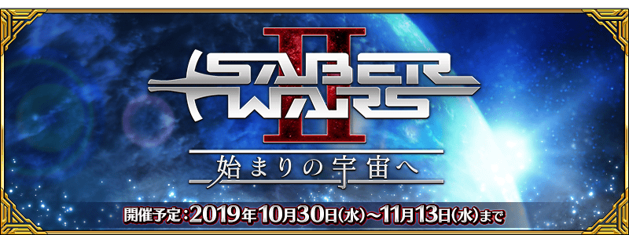

感謝您使用「Fate/Grand Order」。
2019年10月26日(六)在Machi★Asobi vol.23內舉辦的「FGO嘉賓談話 in Machi★Asobi vol.23」，發表了智慧型手機FateRPG「Fate/Grand Order」為首的FGO PROJECT關連新情報。
以下介紹一部份新情報。
◆為了記念「FGO嘉賓談話 in Machi★Asobi vol.23」贈送聖晶石10個！◆
為了記念「FGO嘉賓談話 in Machi★Asobi vol.23」的舉辦，向2019年10月27日(日) 2:59前通過「特異點F 炎上汙染都市 冬木」的御主贈送聖晶石10個。

■對象期間
2019年10月27日(日) 3:00～10月30日(三) 2:59
■贈送內容
聖晶石 10個
■領取條件
2019年10月27日(日) 2:59前通過「特異點F 炎上汙染都市 冬木」的御主對象
※期間內未登入的話無法領取。
※禮物只能領取1次。
※上述時間前，在管理室(ターミナル)畫面的關卡橫幅必須要有「CLEAR」的文字顯示。

◆發表期間限定活動「Saber Wars２ ～邁向初始的宇宙～」的舉辦！◆
發表了自2019年10月30日(三) 17:00(預定)舉辦期間限定活動「Saber Wars２ ～邁向初始的宇宙～」。
＞＞詳情請在此處的公告確認。

◆發表「Saber Wars２ ～邁向初始的宇宙～」舉辦前夕宣傳活動的實施！◆
發表了自2019年10月26日(六) 17:30實施「Saber Wars２ ～邁向初始的宇宙～」舉辦前夕宣傳活動。
＞＞詳情請在此處的公告確認。
◆「Fate/Grand Order Chaldea Park Caravan 2019-2020」舉辦決定！◆
發表了從今年冬天到明天春天舉辦的FGO現實活動名及舉辦時間、會場。今年以「Fate/Grand Order Chaldea Park Caravan 2019-2020」為題，於全國4個會場實施。
會場中除了「Fate/Grand Order」的各種展示談話活動外再加上，原創周邊的販售預定。
詳情日後會在「Fate/Grand Order Chaldea Park Caravan 2019-2020」特設網站發表。
敬請期待續報。
■舉辦時間／會場
2019年12月28日(六)／【福岡】西日本総合展示場 新館
2020年 1月12日(日)／【愛知】Aichi Sky Expo(愛知県国際展示場)
2020年 2月 1日(六)／【石川】石川県産業展示館
2020年 2月23日(日)／【大阪】大阪南港 ATCホール
■票券情報
抽選販售制 2,000円(含稅)
■票券申請
福岡會場：2019年11月22日(五) 12:00開始
※關於其他會場日後會在特設網站公告。
■「Fate/Grand Order Chaldea Park Caravan 2019-2020」特設網站
https://fes.fate-go.jp/winter/
◆LAWSON TV動畫「Fate/Grand Order -絕對魔獸戰線巴比倫尼亞-」宣傳活動舉辦決定！◆
決定在全國LAWSON店舗從2019年11月5日(二)實施【LAWSON TV動畫「Fate/Grand Order -絕對魔獸戰線巴比倫尼亞-」宣傳活動】。
原創冷藏飲料「Fate/Grand Order -絕對魔獸戰線巴比倫尼亞-」金黃巧克力飲料的發售決定！
包裝設計含保密1種全部7種。
其他還有於LAWSON購入對象商品的話，給予使用限定特別描繪插圖的原創周邊的宣傳活動等。
詳情，請閱覽今後公開的LASWON官方HP(10月28日以後)。
今後也請多多指教「Fate/Grand Order」。